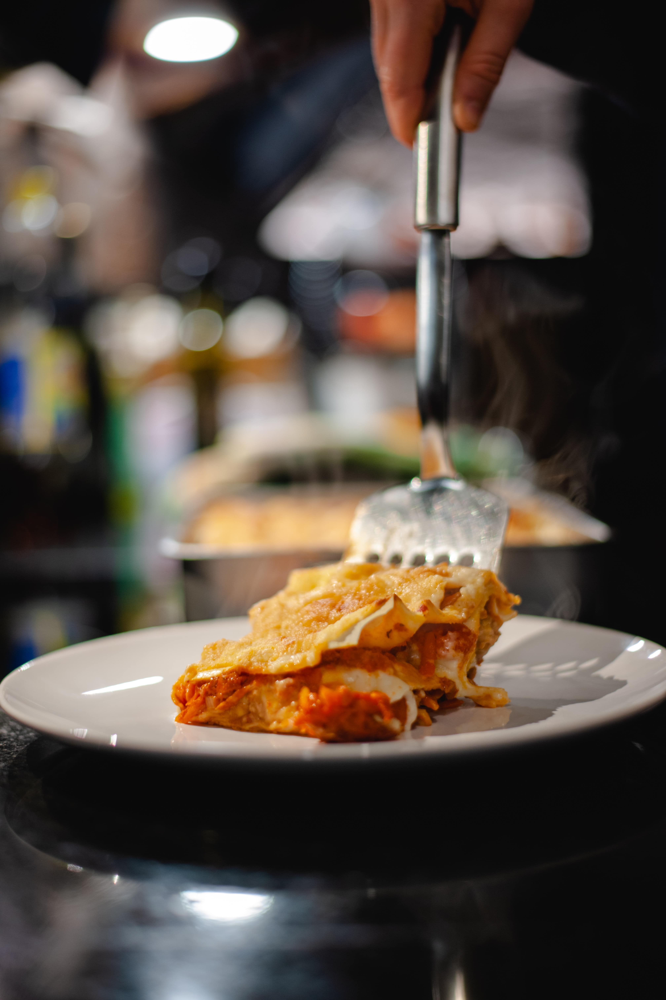

Lunch & Dinner

Hearty Lentil Soup
An easy recipe to clean out any veggies in your refrigerator. Protein packed and heartwarming. Perfect for a rainy fall day.

Classic Ratatouille
Layered vegetable ratatouille is an amazing comfort dish. Strong basil and oregano flavors create a fresh take on a classic dish.

Bright Pesto Pasta
Bright pesto pasta is an easy 15 minute recipe. Any shape pasta with a bright and creamy pesto sauce coating and nutty vegan parmesan topping.
Cheezy Lasagna
Quick and simple lasagna can be made and easily frozen for the future. A bursting red tomato sauce and creamy cashew ricotta.